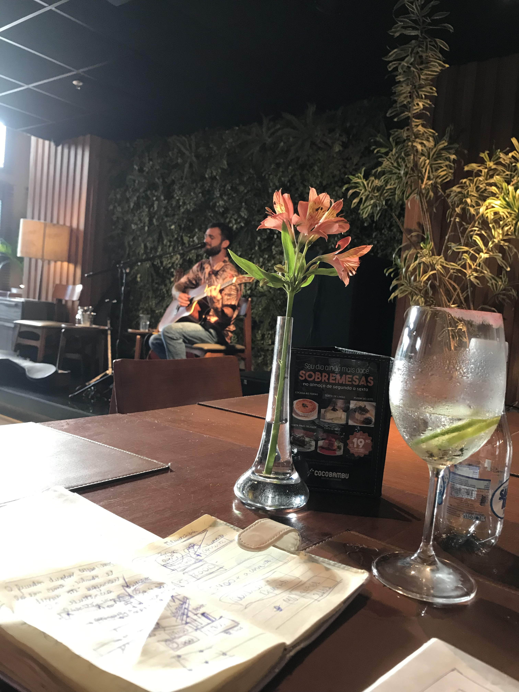

Florianópolis · voz, violão & loop station
Cada música é construída na hora, em camadas: base, batida e solo saindo de um violão só. De Tim Maia a Oasis, sem playback, sem atalho.

Uma mesa em silêncio muda de clima em menos de duas músicas. É isso que busco em cada apresentação: música que transforma o ambiente, não só preenche ele. Hoje faço disso exercício diário: voz, violão e loop station montando cada arranjo na frente do público.
O repertório é eclético na medida: brasilidades de raiz, pop rock que a casa inteira canta, samba rock pra tirar gente da cadeira e a alma do Tim Maia, que nunca falta. Toco em restaurantes, bares e eventos privados pela ilha, sempre lendo a noite e ajustando o som ao lugar.
O repertório se adapta à casa: do jantar tranquilo ao último bloco da noite.
Quer marcar uma data? Fala comigo por aqui.
Restaurantes, bares, casamentos, eventos privados. Conta o que você tem em mente. Respondo em até 24h.